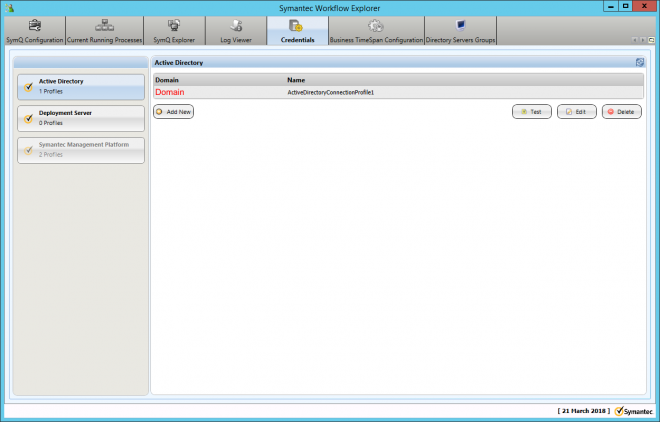
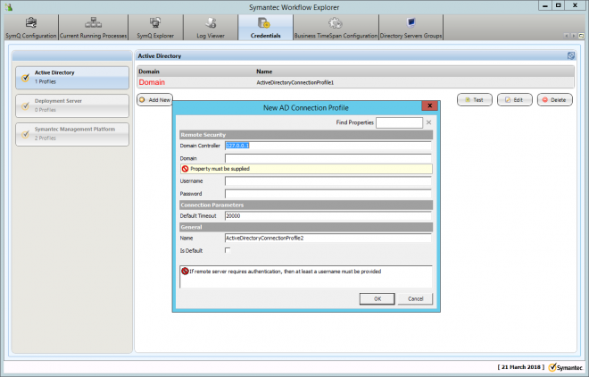
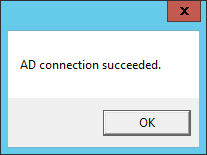
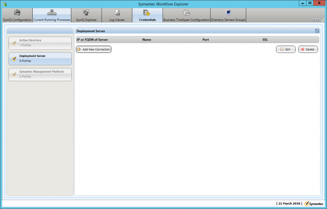
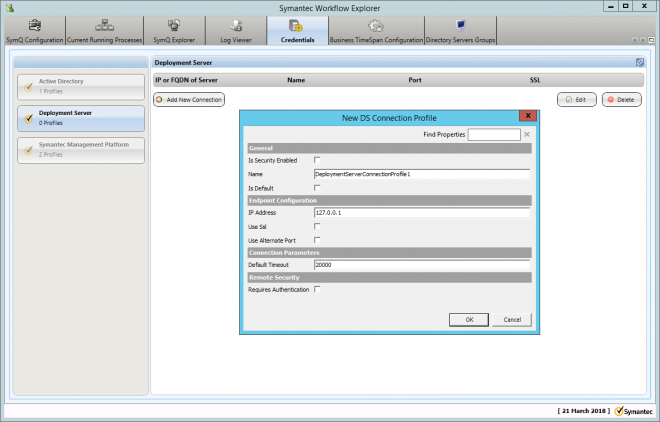
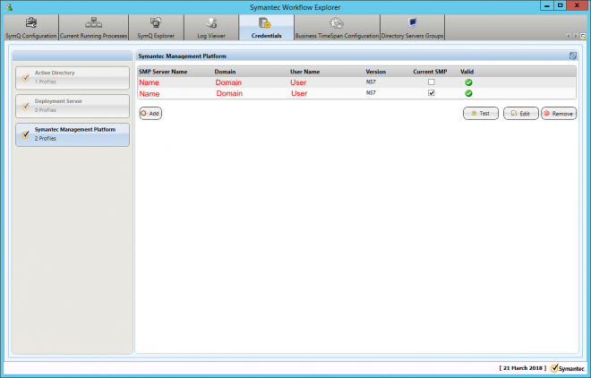
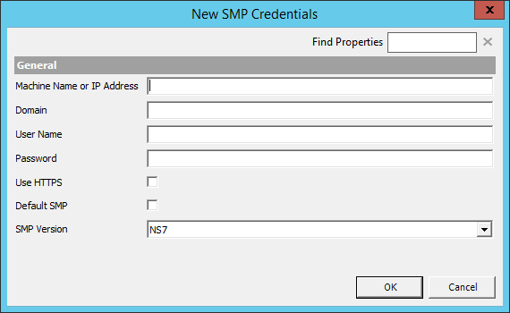
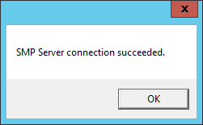

Table Of Contents
- Application Editor
- BusinessTimeSpan Editor
- Composer Theme Editor
- Credentials Manager
- License Status Manager
- LocalMachineInfo Editor
- Log Viewer
- Messaging Console
- Schedule Editor
- Screen Capture Util
- Server Extensions Configurator
- Task Tray Tool
- ToolPreferences Editor
- Workflow Explorer
Start > Programs > Symantec > Workflow Designer > Tools > Credentials Manager
Credentials Manager lets you add, edit, or remove credentials for the Symantec Management Platform and solutions. Credentials Manager handles all of the credentials that you need to create and publish workflow processes. Every Workflow Designer or Workflow Server computer that needs to connect to the Symantec Management Platform computer must have credentials.
Credentials Manager is part of Workflow Explorer, so you can also use it to work with SymQ and logging. You can also work with SymQ and logging from the main Workflow Explorer tool.
Chapter 33 - User Guide
Symantec Glossary
Credentials Manager
A secure store for the credentials that are used by Notification Server and installed solutions.https://www.symantec.com/security_response/glossary/define.jsp?letter=c&word=credential-manager
File Location
"[Install Drive]:\Program Files\Symantec\Workflow\Tools\Symantec.Explorer.exe" -page CredentialManager"
Info
You can create the following Credentials
- Active Directory
- Deployment Server
- Symantec Management Platform
These are saved as XML files in the following location.
C:\ProgramData\Symantec\Workflow\
- Connections_ActiveDirectoryConnectionProfile.xml
- Connections_DeploymentServerConnectionProfile.xml
- Connections_NotificationServerConnectionProfile.xml
- ProcessManager_ActiveDirectoryConnectionProfile.xml
If the Credentials Manager has been tested and shows as successful but you are still getting errors in your workflow it might be worth nuking these Files, which will delete the stored creds and re-creating them. This can solve a number of issues.
Screenshots
Active Directory
Click on the "Active Directory" tab.

Click on Add New and fill in the values.

You can highlight a Profile and click "Test"

Deployment Server
Click on the "Deployment Server" tab.


Symantec Management Platform
Click on the "Symantec Management Platform" tab.

Click on "Add" and fill in the required details.

You can also "Test" this to make sure it's valid.

Help
About Credentials Manager
https://support.symantec.com/en_US/article.HOWTO62287.html
Adding credentials in Credentials Manager
https://support.symantec.com/en_US/article.HOWTO62288.html
Errors
Credentials Manager crashes with error Symantec.Explorer.exe has stopped working
https://support.symantec.com/en_US/article.TECH180691.html